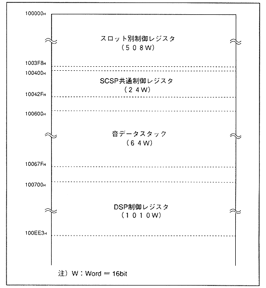

Return to previous page
｜
Return to menu
｜
Go to next page
Chapter 4 SCSP Register
4.1 Register map
SCSP has a waveform calculation unit called a slot to realize FM speech synthesis.
Figure 4.1 describes the SCSP memory map and the allocation of each register configured in the memory map.
Figure 4.1 SCSP memory map (1906W)

Return to previous page
｜
Return to menu
｜
Go to next page